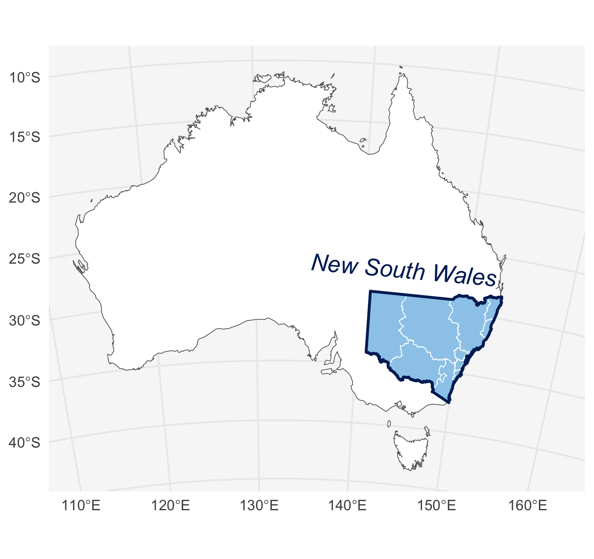
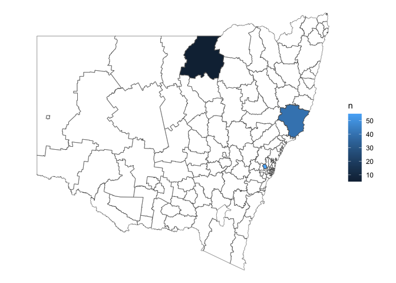

A collection of geospatial datasets and map plotting helpers for working with New South Wales maps. The maps are registered with cartographer. This package is not an official publication, merely a collection of handy data from public sources.
Installation
You can install nswgeo like so:
# CRAN release
install.packages('nswgeo')
# development version
install.packages('nswgeo', repos = c('https://cidm-ph.r-universe.dev', 'https://cloud.r-project.org'))Examples
The data can be used directly with ggplot:
library(nswgeo)
library(ggplot2)
ggplot(nswgeo::nsw) +
geom_sf(fill = "white", data = nswgeo::australia) +
geom_sf(fill = "#9BCBEB", colour = NA) +
geom_sf(fill = NA, colour = "white", data = nswgeo::lhd) +
geom_sf(fill = NA, colour = "#002664", linewidth = .8) +
annotate(
"text", x = 144, y = -27, label = "New South Wales",
angle = -5, size = 5, fontface = "italic", colour = "#002664"
) +
coord_sf(crs = crs_gda2020_albers(), default_crs = crs_gda2020()) +
theme_minimal() +
theme(
panel.background = element_rect(fill = "grey97", colour = NA),
axis.title = element_blank(),
)
Alternatively, the data can be accessed through cartographer:
library(cartographer)
head(covid_cases_nsw)
#> # A tibble: 6 × 5
#> postcode lga lhd year type
#> <chr> <chr> <chr> <int> <chr>
#> 1 2427 Mid-Coast Hunter New England 2022 B
#> 2 2761 Blacktown Western Sydney 2021 A
#> 3 2426 Mid-Coast Hunter New England 2022 B
#> 4 2148 Blacktown Western Sydney 2022 B
#> 5 2768 Blacktown Western Sydney 2021 A
#> 6 2766 Blacktown Western Sydney 2021 B
covid_cases_nsw |>
dplyr::count(lga) |>
add_geometry(lga, feature_type = "nswgeo.lga") |>
ggplot() +
geom_sf(aes(fill = n)) +
geom_sf(fill = NA, data = map_sf("nswgeo.lga")) +
scale_fill_viridis_b("Cases") +
theme_void()
A note on resolution
Some of the source datasets are very high resolution and would make this package too large if they were bundled. Accordingly, most data has been processed to reduce the resolution. You can see exactly what was done by looking at the scripts in data-raw/, which also help to download source data.
If you need higher resolution shapes, such as when zooming into specific postal areas, you’re better off using the original datasets directly.
Other Australian data
-
strayrhelps with working with data from the Australian Bureau of Statistics (ABS). -
absmapsdatacontains some processed ABS geospatial data.